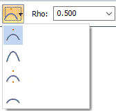
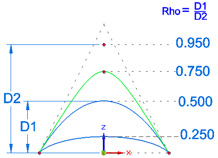
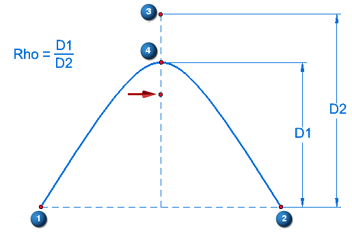
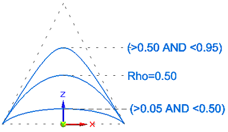

Draw a conic curve
The type and shape of the conic you create is controlled by its Rho value. If you want to create a hyperbola, parabola, or ellipse, select one of the predefined shape types from the Conic Shapes list. The Rho value range associated with each curve type is displayed for reference.
For maximum flexibility, use the default shape type on the command bar—Conic—to draw the curve.
Create a conic curve
-
Choose the Sketching tab→Draw group→Curve list →Conic command .
-
On the command bar, open the Conic Shape list and select the curve shape you want to create: Hyperbola, Parabola, or Ellipse. You can use the default option, Conic, to draw any of the curve shapes.

The default Rho value for the selected curve shape is displayed on the command bar.
Example:The closer the Rho value is to 0.950, the more elongated the curve.

-
Click the start point (1) of the curve.
-
Click the end point (2) of the curve.
-
Click the control point (3) of the curve.
-
For a conic, hyperbola, or ellipse, click the vertex of the curve (4). The Rho value is calculated from the point entered. Instead of clicking, you can enter a specific value in the Rho edit box.
The focal point for a parabola () is defined automatically.

-
To finish the curve, right-click after point (4). Press Esc to exit the command.
Specify a hyperbola, parabola, or ellipse curve using the shape list
You can use the Conic Shapes list to specify that you want to draw a hyperbola, parabola, or ellipse. This makes it easier to draw a curve within a specific Rho value range.
-
Conic—Creates any conic curve shape using a Rho value greater than 0.05 and less than 0.95.
-
Hyperbola—Creates a hyperbola with a Rho value greater than 0.50 and less than 0.95.
-
Parabola—Creates a parabola with a Rho value equal to 0.50.
-
Ellipse—Creates an ellipse with a Rho value greater than 0.05 and less than 0.50.

How do I
Draw a curveDisplay the control polygon for a curve
Insert or remove points on a curve
Simplify a curve
Convert analytic geometry to a b-spline curve
Edit a conic curve
Look up more details
Curve commandCurve command bar
Curve Options dialog box
Conic command
Conic command bar
Simplify Curve command
Simplify Curve dialog box
Convert To Curve command